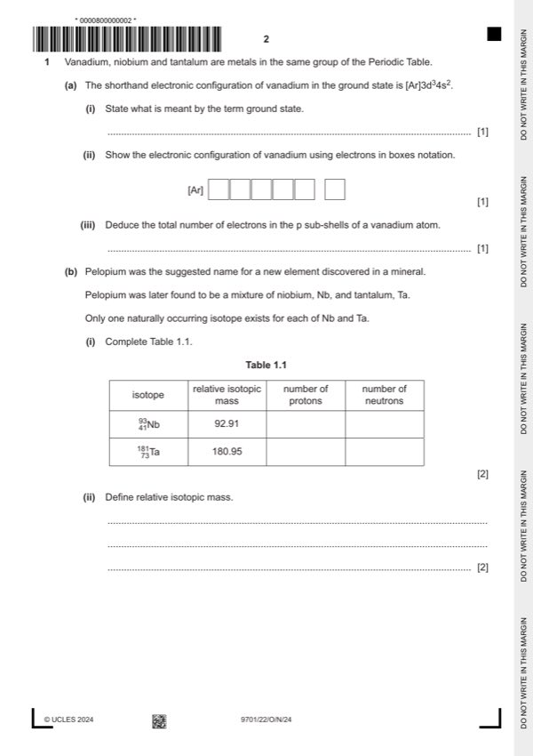

Question 1

Original paper page 2
Part 1(a)(i) — solution
- (with) lowest energy
- (with) no external energy
- (with) no added energy
- (where) electrons are not promoted to a higher energy level
- most energetically stable
Mark points
- (with) lowest energy
- (with) no external energy
- (with) no added energy
- (where) electrons are not promoted to a higher energy level
- most energetically stable
Part 1(a)(ii) — solution
↑ ↑ ↑ ↑↓ 1
[Ar]
The 3 d electrons may go in any of the d orbitals
Mark points
- Include the ideas shown in the solution above.
Part 1(a)(iii) — solution
Answer: 12 1
12 1
Mark points
- Correct result: 12 1
Part 1(b)(i) — solution
isotope RIM # protons # neutrons
Mark points
- Include the ideas shown in the solution above.
Part 1(b)(ii) — solution
Answer: OR · OR
- [M1] mass of an (atom of an) isotope 1
- [M2] relative/compared to (the mass of) the unified atomic mass unit 1
Mark points
- [M1] mass of an (atom of an) isotope 1
- [M2] relative/compared to (the mass of) the unified atomic mass unit 1
Part 1 — solution
divided by / compared to of the mass of a carbon-12 atom / isotope
Mark points
- Include the ideas shown in the solution above.
Part 1 — solution
- [M2] relative/compared to of the mass of 1 mol of C-12 atom / isotope
Mark points
- [M2] relative/compared to of the mass of 1 mol of C-12 atom / isotope
Part 1(b)(iii) — solution
- = 100.92 1
Mark points
- = 100.92 1